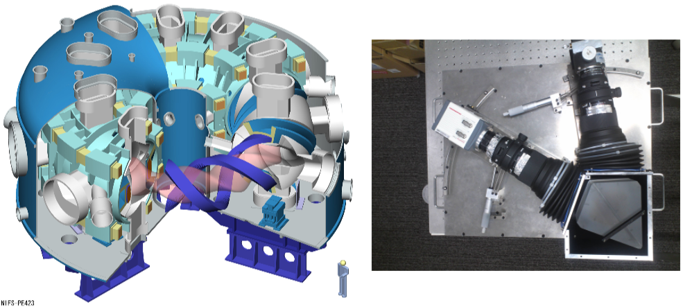

Research topics
We are investigating measurement methods based on spectroscopy.
Ion Flow Measurement in Fusion Plasma using Emission Spectroscopy
Fig. (a) Schematics of experimental setup used for flow measurements. Light emitted from the plasmas on the blue lines were measured using bundles of optical fibers and lenses. (b) Example of C III emission spectra. Emission from C2+ impurity ions was measured since H+ ion has no electrons and does not emit light. You can see the measured data (shown in black marker) peak at a shorter wavelength than that of the central wavelength (shown in red line). (c) Measured distribution of velocity under different magnetic conditions with different heating conditions [1].
Fusion power generation is a method of generation to utilize the energy of nuclear fusion reaction and is expected to be an alternative energy resource. For the realization, a hydrogen plasma with high temperature needs to be confined using a magnetic field. Since flow in the plasma is known to stabilize the confinement, we develop a spectroscopic method to measure a flow in the plasma to reveal the driving and damping mechanism.
Ions in plasma emit light and the wavelength of the emitted light is unique to the ions. However, the wavelength of the observed light is slightly different for moving ions because of the Doppler effect. We have developed a method to measure the difference in wavelength precisely and measure the flow with small velocity such as several km/s.
The experiment was performed using QUEST (Q-shu University Experiment with Steady-State Spherical Tokamak) in Kyushu Univ.
[1] N. Yoneda, T. Shikama, K. Hanada, et al., Nucl. Mater. Energy, 26, 100905 (2021) https://doi.org/10.1016/j.nme.2021.100905
原子・プラズマの統計モデリング

Interacting many-body systems, such as electrons in heavy atoms and charged particles in plasmas, often exhibit very complex behaviors. We study their statistical model, where we try to approximate the complex parts based on probability theory to extract essential properties of the systems.
For example, it has been known for a long time that the number of emission lines with a given intensity from complex many-electron atoms follow a power-law. Based on a simple probabilistic modeling, we theoretically explained this property for the first time. Furthermore, we showed that electromagnetic emissions from one of similar systems, heavy nuclei, also follow the same distribution.
Such power-law distributions have been often observed in many fields of natural and social sciences. In particular, the power-law distribution is considered to be related to the scale-free nature of systems. We pointed out that the power-law intensity distribution, which we found above, originated from the fact that the atomic structure and the nuclear structure have a property of a scale-free network.
[1] K. Fujii and J. C. Berengut, Physical Review Letters, 124, 185002 (2020)
https://arxiv.org/abs/1908.10464
[2] K. Fujii and J. C. Berengut, Physical Review Letters, accepted (2021)
https://arxiv.org/abs/2005
Diode laser absorption spectroscopy of atmospheric-pressure micro-plasmas
Atmospheric-pressure plasmas have been attracting more and more attention because of their possibility of various applications, for example waste treatment, nano-particle formation, thin film deposition, plasma welding and cutting.
However, their plasma parameters such as gas temperature, electron density and temperature, … etc. have not been well examined.
Atoms and molecules absorb light with specific frequencies. The absorption spectroscopy utilizes this phenomenon.
Here we consider that a laser beam passes through a micro-plasma, as shown in Fig.2.
The intensities of the incident and transmitted beam through the micro-plasma are observed by a photo detector.
By sweeping the laser frequency, relations between the intensities and the frequency are obtained (Fig. 3).
The left and bottom axis of Fig.3 show the intensities and the frequency shift of the laser, respectively.
The intensity of the transmitted beam falls rapidly near the specific frequency.
This shows that the light with specific frequency is absorbed by the micro-plasma.
The absorption profile depends on the gas temperature and the electron density of the plasma.
We are developing a method to determine such parameters by analyzing such absorption profile.
Accuracy Improvement based on Machine Learning

Figure (a): Electron density distribution in LHD plasma measured by current Thomson scattering system. (b): Calibrated resutls by machine learning method.
We are developing diagnostic methods based on machine learning.
In general, every measurement data is suffered from systematic noise due to calibration error of the measurement systems.
We focus on the fact that the measured data itself contains information of the calibration error,
we developed a method to extract the systematic scatter in a lot of data and
calibrated the measurement system.
We applied this method to the electron density distribution data measured by Thomson scattering system (Fig. (a)).
The result is shown in Fig. (b). Most of the scatter are removed by this post-calibration,
and the signal to noise ratio improves by factor 5.
This enabled us to observe more detailed spatial structure of the electron density in high temperature plasmas.
[1] K. Fujii et al., Review of Scientific Instruments 88, 013508 (2017)
High Temperature Plasma Diagnostics by High Dynamic-Range Spectroscopy

FIG.1 left: A schematic illustration of a high temperature plasma generator, LHD.
right: A large dynamic-range spectrometer developed by our lab.
FIG.1 left: A schematic illustration of a high temperature plasma generator, LHD. right: A large dynamic-range spectrometer developed by our lab.
In corporation with National Institute for Fusion Science, we study high temperature plasmas generated in Large Helical Device (LHD, depicted in figure 1 left).
In LHD, hydrogen atoms are heated over 10 million degrees and ionized into electrons and protons.
Such a state of the gas is called as "plasma".
During the ionization of atoms, they emit light.
From the observation of the light, we study the dynamics of the hydrogen atoms in the high temperature plasma.
Our specialty is a measurement by developing a new instrument with high-specification.
Figure 1 right shows a picture of a high dynamic-range spectroscopic system developed in our lab.
Figure 2 shows the Balmer-α line profile observed for an LHD plasma.
It is noted that the vertical axis is logarithmic.
Thanks to the high dynamic-range of the instrument, the simultaneous observation of the line center and wings whose intensity is over 103 times smaller than the peak intensity has been achieved.
The solid curves in the figure show the results of a hydrogen transport simulation.
From the study, we found the emission from the few neutral hydrogen atoms exist in the very high temperature regions, which have been considered to be unable to be observed [1,2].
Now we are working toward the much higher dynamic-range and the higher time-resolution measurements and also proposing the above technique as a new diagnostic method for high temperature plasmas.